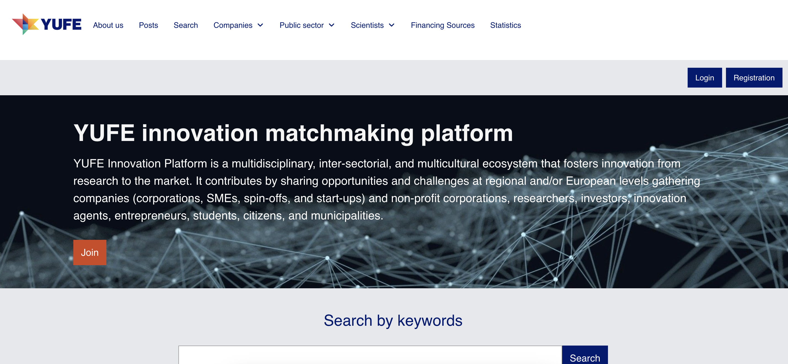
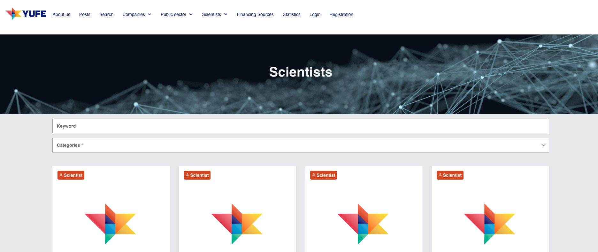
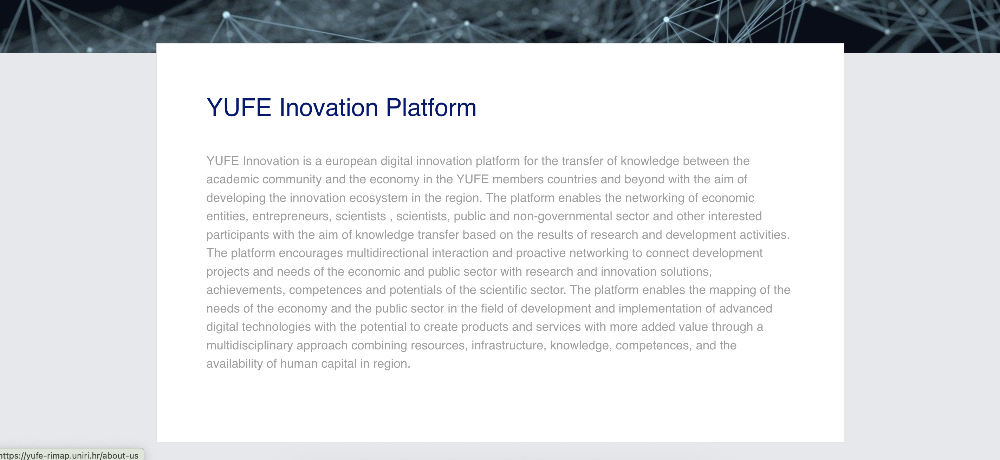

YUFE
Kao dio mreže Young Universities for the Future of Europe (YUFE), ova regionalna platforma za digitalne inovacije potiče prijenos znanja između akademske zajednice i gospodarstva diljem Europske unije. Povezuje tvrtke, poduzetnike, istraživače i javni sektor iz različitih regija EU-a radi suradnje u istraživanju, razvoju i digitalnim tehnologijama. Olakšavanjem prekograničnog umrežavanja i inovacija platforma pomaže u stvaranju proizvoda i usluga visoke vrijednosti kroz multidisciplinarni pristup, koristeći resurse, stručnost i ljudski kapital iz cijele Europe.
As part of The Young Universities for the Future of Europe (YUFE) network, this regional digital innovation platform fosters knowledge transfer between academia and the economy across the European Union. It connects businesses, entrepreneurs, researchers, and public sectors from different EU regions to collaborate on research, development, and digital technologies. By facilitating cross-border networking and innovation, the platform helps create high-value products and services through a multidisciplinary approach, utilizing resources, expertise, and human capital from across Europe.
Come parte della rete Young Universities for the Future of Europe (YUFE), questa piattaforma regionale per l'innovazione digitale promuove il trasferimento di conoscenze tra mondo accademico ed economia in tutta l'Unione europea. Mette in contatto imprese, imprenditori, ricercatori e settore pubblico di diverse regioni dell'UE per collaborare su ricerca, sviluppo e tecnologie digitali. Facilitando il networking e l'innovazione transfrontalieri, la piattaforma aiuta a creare prodotti e servizi ad alto valore attraverso un approccio multidisciplinare, sfruttando risorse, competenze e capitale umano di tutta Europa.
Als Teil des Netzwerks Young Universities for the Future of Europe (YUFE) fördert diese regionale Plattform für digitale Innovation den Wissenstransfer zwischen Wissenschaft und Wirtschaft in der gesamten Europäischen Union. Sie verbindet Unternehmen, Unternehmer, Forschende und den öffentlichen Sektor aus verschiedenen EU-Regionen für die Zusammenarbeit in Forschung, Entwicklung und digitalen Technologien. Durch grenzüberschreitende Vernetzung und Innovation hilft die Plattform, mit einem multidisziplinären Ansatz hochwertige Produkte und Dienstleistungen zu schaffen – unter Nutzung von Ressourcen, Know-how und Humankapital aus ganz Europa.

TehnologijeTechnologiesTecnologieTechnologien
IzazovChallengeSfidaHerausforderung
Omogućiti prekograničnu suradnju i inovacije među raznolikim dionicima (gospodarstvom, akademskom zajednicom, istraživačima i javnim sektorom), uz jasno, pregledno i jednostavno korisničko iskustvo u kojem se sadržaj lako pronalazi.
Enable cross-border collaboration and innovation between diverse stakeholders (business, academia, researchers, and public sectors) while keeping the experience clear, discoverable, and easy to navigate.
Consentire la collaborazione e l'innovazione transfrontaliera tra attori diversi (imprese, mondo accademico, ricercatori e settore pubblico), mantenendo un'esperienza chiara, facile da scoprire e da navigare.
Grenzüberschreitende Zusammenarbeit und Innovation zwischen verschiedenen Akteuren (Wirtschaft, Wissenschaft, Forschende und öffentlicher Sektor) ermöglichen – bei einem klaren, auffindbaren und leicht navigierbaren Nutzererlebnis.
RješenjeSolutionSoluzioneLösung
Izraditi strukturiranu platformu bogatu sadržajem, s dobro osmišljenom informacijskom arhitekturom i intuitivnim sučeljem koje podržava umrežavanje, otkrivanje sadržaja i prijenos znanja među regijama i disciplinama.
Deliver a structured, content-rich platform with strong information architecture and a user-friendly interface that supports networking, discovery, and knowledge transfer across regions and disciplines.
Realizzare una piattaforma strutturata e ricca di contenuti, con una solida architettura dell'informazione e un'interfaccia intuitiva che supporti networking, scoperta e trasferimento di conoscenze tra regioni e discipline.
Eine strukturierte, inhaltsreiche Plattform mit starker Informationsarchitektur und benutzerfreundlicher Oberfläche liefern, die Vernetzung, Entdeckung und Wissenstransfer über Regionen und Disziplinen hinweg unterstützt.
Prikaz projektaProject ShowcasePresentazione del progettoProjektpräsentation


Ključne značajkeKey FeaturesCaratteristiche principaliHauptfunktionen
Prekogranično umrežavanjeCross-border networkingNetworking transfrontalieroGrenzüberschreitende Vernetzung
Povezuje dionike iz različitih regija EU-a radi suradnje u istraživanju i razvoju te digitalnim tehnologijama.
Connect stakeholders from different EU regions to collaborate on R&D and digital technologies.
Mette in contatto attori di diverse regioni dell'UE per collaborare su R&S e tecnologie digitali.
Verbindet Akteure aus verschiedenen EU-Regionen für die Zusammenarbeit in F&E und digitalen Technologien.
Prijenos znanjaKnowledge transferTrasferimento di conoscenzeWissenstransfer
Povezuje akademsku zajednicu i gospodarstvo kroz strukturirane informacije i jasne putove suradnje.
Bridge academia and the economy through structured information and collaboration pathways.
Collega mondo accademico ed economia attraverso informazioni strutturate e percorsi di collaborazione.
Verbindet Wissenschaft und Wirtschaft durch strukturierte Informationen und Kooperationswege.
Multidisciplinarni pristupMultidisciplinary approachApproccio multidisciplinareMultidisziplinärer Ansatz
Koristi stručnost i ljudski kapital iz cijele Europe za postizanje rezultata visoke vrijednosti.
Leverage expertise and human capital across Europe to support high-value outcomes.
Sfrutta competenze e capitale umano di tutta Europa per ottenere risultati ad alto valore.
Nutzt Know-how und Humankapital aus ganz Europa für hochwertige Ergebnisse.
Jasna informacijska arhitekturaClear information architectureArchitettura dell'informazione chiaraKlare Informationsarchitektur
Logična navigacija koja olakšava pronalaženje programa, partnera i prilika.
Logical navigation that makes programs, partners, and opportunities easy to discover.
Navigazione logica che rende facili da scoprire programmi, partner e opportunità.
Logische Navigation, die Programme, Partner und Möglichkeiten leicht auffindbar macht.
Skalabilna platformaScalable platformPiattaforma scalabileSkalierbare Plattform
Izrađena da raste zajedno s novim regijama, inicijativama, vrstama sadržaja i potrebama za suradnjom.
Built to grow with new regions, initiatives, content types, and collaboration needs.
Progettata per crescere con nuove regioni, iniziative, tipi di contenuti e esigenze di collaborazione.
Ausgelegt für Wachstum mit neuen Regionen, Initiativen, Inhaltstypen und Kooperationsanforderungen.
Responzivan dizajnResponsive designDesign responsiveResponsives Design
Optimizirano za stolna računala, tablete i mobilne uređaje.
Optimized for desktop, tablet, and mobile devices.
Ottimizzato per desktop, tablet e dispositivi mobili.
Optimiert für Desktop, Tablet und Mobilgeräte.